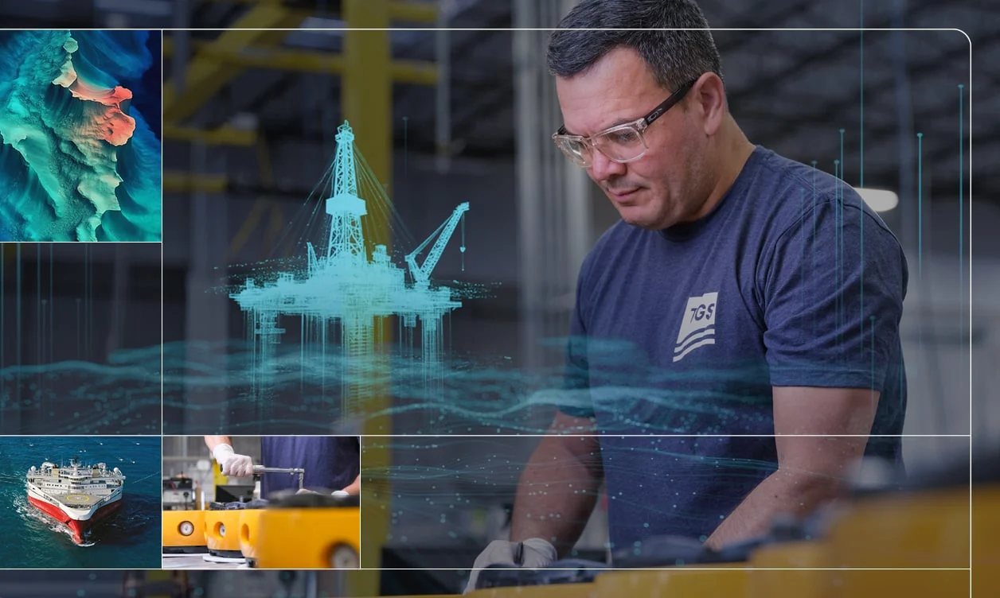

Energidata og innsikt · Oslo
Data som driver energiomstillingen.
TGS leverer data og innsikt til hele energibransjen – på tvers av energispektret, gjennom innovasjon og datadrevne løsninger.
SeismikkSol · vind · karbonDigital
01 — Data og innsikt
På tvers av energispektret
Vi bruker ulike datakilder – også våre egne – for å skape innsikt.
02 — Teknologi
Innovasjon og datadrevne løsninger
Gjennom innovasjon og datadrevne løsninger bruker TGS ulike datakilder, inkludert egne, for å skape innsikt for kundene.
- Imaging – billeddannelse og tolkning.
- Acquisition – datainnsamling.
- Digital – plattformer og apper.
03 — Slik jobber vi
Fra data til beslutning
Dataene skal være til å bruke, ikke bare å lagre.
- Innsamling
Data fra egne og andres kilder.
- Behandling
Imaging og kvalitetssikring.
- Innsikt
Tolkning og modeller.
- Leveranse
Tilgang og apper for kunden.
«Energidata og innsikt for hele energispektret.»
Energidata for hele spekteret
Ta kontakt for en samtale om data, lisenser eller et samarbeid.